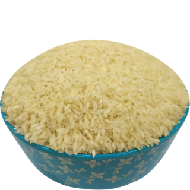
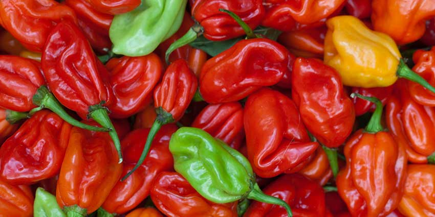
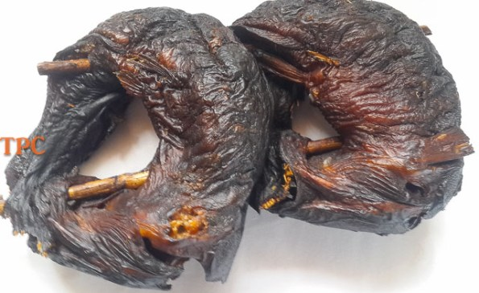
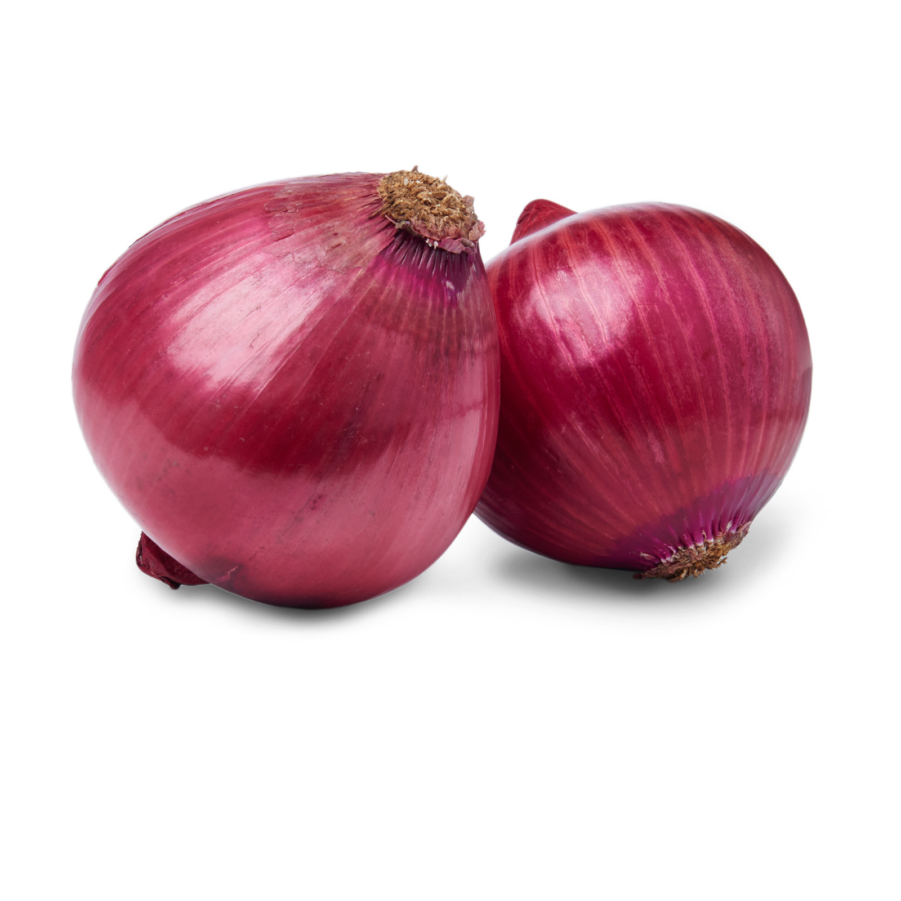
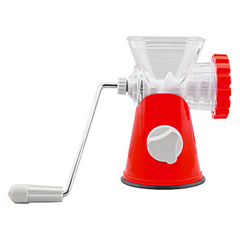
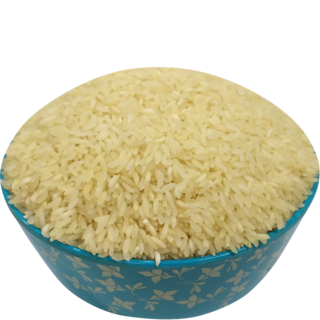
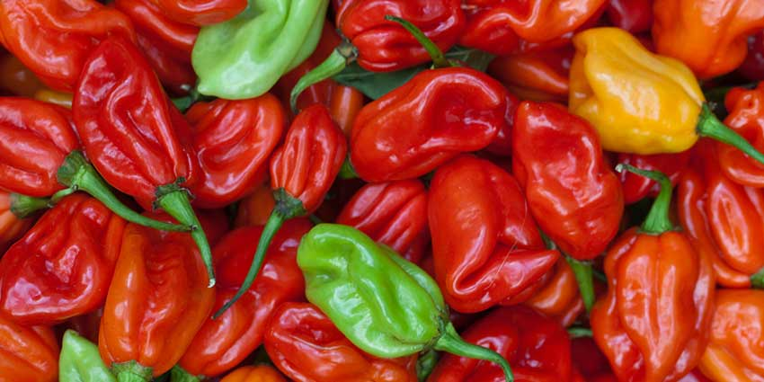
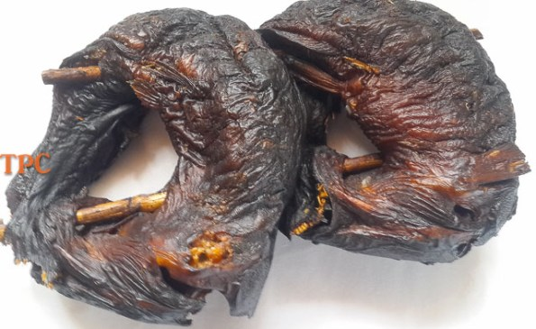
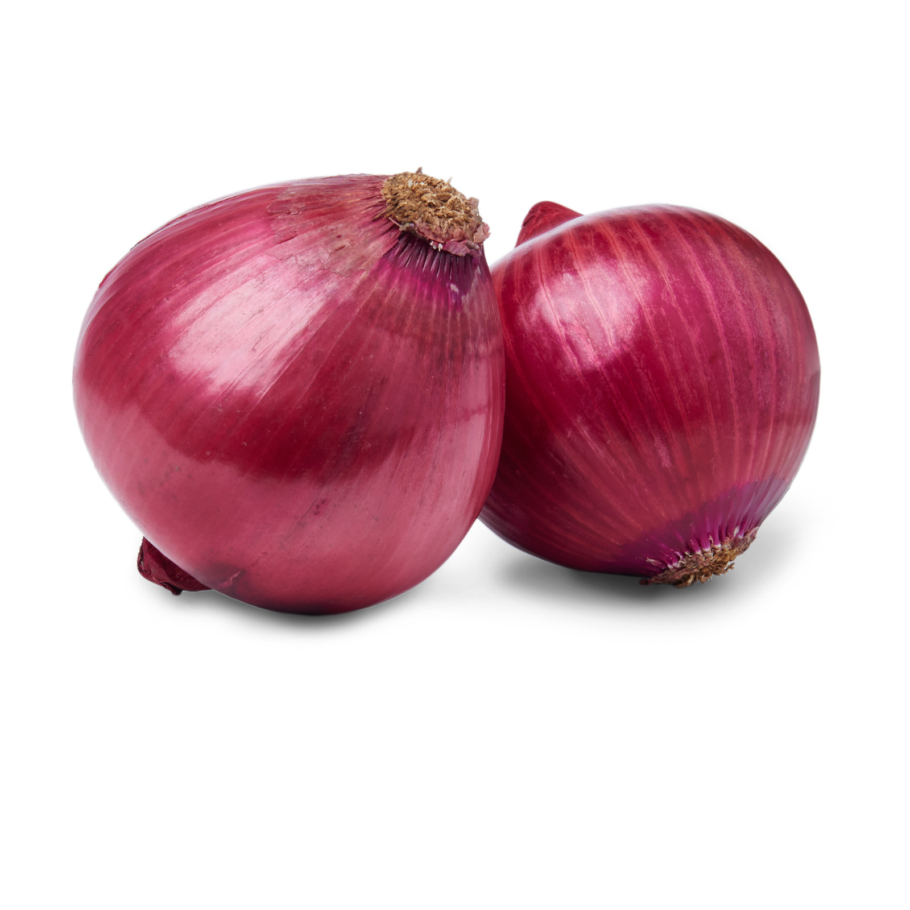
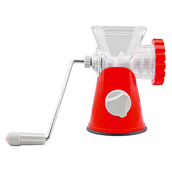

Rice (5 cups)
Bell Pepper(Ata Rodo)
Raw Tomatoes

Salt

4 Seasoning Cubes

Smoked Fish
Vegetable Oil

2 Onion bulbs
Hand/Manual Blender
Yield: serves 5 people
Rice (5 cups)
Bell Pepper(Ata Rodo)
Raw Tomatoes
Salt
4 Seasoning Cubes
Smoked Fish
Vegetable Oil
2 Onion bulbs
Hand/Manual Blender
Preparations
***You can also choose to parboil the rice for 5 to 10mins before you rinse it.
***Your end product should look similar to the image in this section
Preparations
Now let's get cooking...
Preparations
I'm sure you know you have to light your gas *winks*
Serve the rice and add the stew on it. Feel free to add beef, chicken turkey or ponmo (anyway you like it). Having a chilled cup or bottle of soft drink or juice isn't a bad idea either.